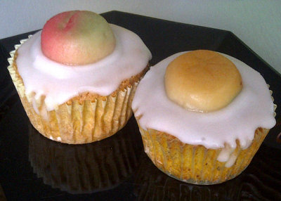

| Zutaten für 12 Stück: | |
| 3 | Eier |
| 150g | Zucker |
| 150g | Rüebli, fein geraffelt |
| 150g | geriebene Mandeln |
| 1/2 | Zitrone |
| 50g | Mehl |
| 1 El | Backpulver |
| 1 Prise | Salz |
| 1 Prise | Salz |
| 1 El | Kirsch |
| 150g | Puderzucker |
| 12 | Marzipanrüebli |
Zucker und Eigelb schaumig rühren.
Rüebli, Mandeln und Zitronenschale, Zitronensaft und Kirsch dazugeben.
Mehl und Backpulver dazu sieben.
Eiweiss mit einer Prise Salz steif schlagen und darunter ziehen.
Im Förmliblech die Förmli mit Muffinsformen auslegen und die Masse einfüllen.
Bei 180°C (schwache Hitze) ca. 40 Minuten backen.
Erkalten lassen.
Mit Zitronenglasur glasieren. Dazu 150g Puderzucker mit 1-2 El Zitronensaft auflösen und sorgfältig auf die Muffins verstreichen. Mit einem Marzipanrüebli garnieren.
Durch Sandra abgewandeltes Rezept von http://equey.ch/rezepte/dessert/38.pdf (404)
Hat im August 2012 hervorragende Muffins ergeben. Arbeitskollegen meinten "Die könnte man glatt verkaufen!" RE
@LINKBACK_TAG@ @WAKELOCK@